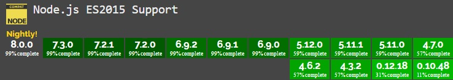

Nowoczesne Aplikacje Internetowe
Node.js and Express
Tadeusz Makuch
tadeusz.makuch@gft.com
Andrzej Matłosz
andrzej.matlosz@gmail.com
Materiały: https://github.com/tmakuch/UAM
Przygotowania:
- Node.js
- npm install -g nodemon
- npm install -g node-inspector
Disclaimer
Na dzień dzisiejszy (2017.01.04) node-inspector nie działa.
Hotfix:
Node v6.3.1 lub drobna zmiana w kodzie
Środowisko uruchomieniowe:
- oparte na silniku V8
- oparte o zdarzenia
- oparte o operacje asynchroniczne
- z dużą społecznością
Wsparcie es6
Źródło
Biblioteczki - plusy i minusy
https://github.com/finnp/knock-knock-jokes
vs
left-pad (marzec 2016)
Czy mogę tworzyć własne biblioteki?
TAK!
https://gist.github.com/coolaj86/1318304
Wersja tl/dr: npm publish
Przykład przydatnej biblioteczki - minimist
// node example/parse.js -x 3 -y 4 -n5 -abc --beep=boop foo bar baz
const argv = require('minimist')(process.argv.slice(2));
console.log(process.argv.slice(2));
// ['-x', '3', '-y', '4', '-n5', '-abc',
// '--beep=boop', 'foo', 'bar', 'baz']
console.log(argv);
// { _: [ 'foo', 'bar', 'baz' ],
// x: 3,
// y: 4,
// n: 5,
// a: true,
// b: true,
// c: true,
// beep: 'boop' }
Przykład przydatnej biblioteczki - lodash
const _ = require('lodash');
const data = [ { name: 'Book 1', count: 5 }];
_(data).filter(count => count > 0).map('name').value();
// ok, es6 ma filter i map, ale lodash zawiera wiele zabezpieczeń,
// których brakuje natywnym funkcjom.
// Ponadto nadal rozszerza w dużym stopniu funkcjonalność JS.
Zadanie
-
Napisać program, który powita wszystkie przekazane argumenty.
node greet World Universe // Hello World, Universe! -
Może ignorować argumenty.
node greet Oceans Earth World --ignore Earth --ignore Oceans // Hello World! -
Może nie pozdrowić nikogo.
node greet World --no-greeting // Shhh!
Czym jest express.js?
- Minimalistyczna biblioteka do pisania serwerów.
- Szeroko wykorzystywany na środowiskach produkcjnych.
- Bardziej popularny niż jego następca hapi.js
npm install express --save
npm install body-parser --save
Zaczynamy
const express = require('express');
const app = express();
app.get('/', (req, res) => res.send('Hello world!'));
app.listen(8080, () => console.log('Server started on port 8080'));
Wykorzystanie lokalnych plików
app.use(express.static(__dirname + '/public/'));

Kolejność wywołania
app.get('/*', (req, res, next) => {
if (!req.query.authorized) {
res.status(401).send('Niezalogowany!');
} else {
next();
}
});
Router
const router = express.Router();
router.get('/', (req, res) => res.send('Hello inner world!'));
app.use('/inner', router);
Response
app.get('/:id', (req, res) => {
// res.status(code)
// res.send(data)
// res.json(jsonData)
// https://expressjs.com/en/api.html#res
});
Request
app.get('/:id', (req, res) => {
// req.params
// req.query
// req.app
// https://expressjs.com/en/api.html#req
});
Request.body
constant bodyParser = require('body-parser');
app.use(bodyParser.urlencoded({
extended: false
}));
app.use(bodyParser.text());
app.use(bodyParser.json());
app.post('/:id', (req, res) => {
// req.body
});
Zadanie
Napisać prosty serwer, który będzie zarządzał listą zadań (todo).
Powinien obsługiwać 3 zapytania:
- GET /api/tasks
- CREATE /api/task
- DELETE /api/task/:index
Do testowania serwera można wykorzystać swoje rozwiązanie kolokwium (wrzucając je do folderu public) lub za pomocą narzędzia Postman.